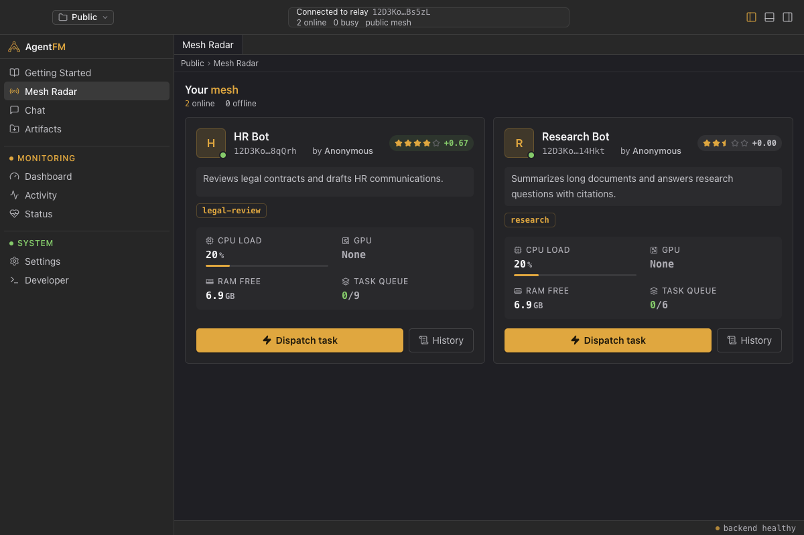
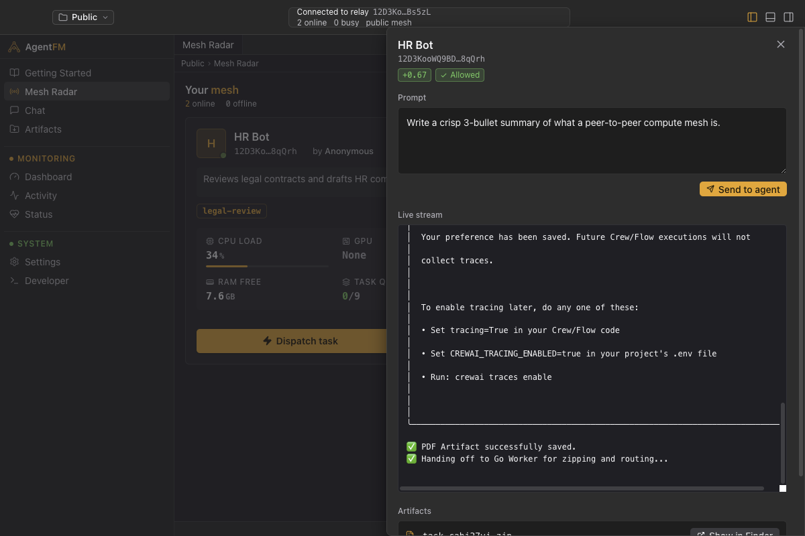
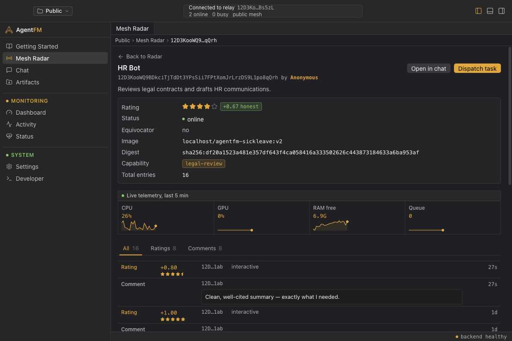
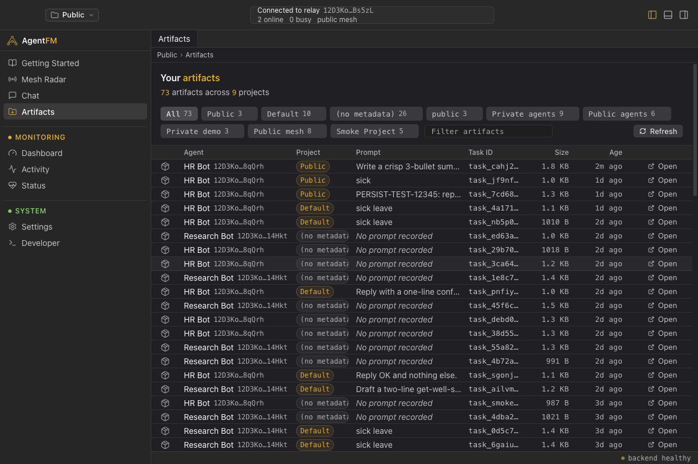

How it works
Three roles. One binary.
Every node runs the same agentfm binary. A flag picks the role, libp2p does the rest.
Workers run your agent
Each task executes in a fresh Podman sandbox. Workers broadcast live CPU, GPU, RAM and queue depth every two seconds.
The relay keeps everyone found
A lighthouse on a public IP handles discovery, punches through NAT, and archives the trust ledger so history survives restarts.
You dispatch from anywhere
The desktop app, a curl one-liner, or any OpenAI SDK. Output streams back live and files return as zipped artifacts.
Anatomy of a dispatch
What happens when you hit send.
- DispatchYour task routes to the least-loaded worker that advertises the right model. The trust gate checks its reputation first.
- SandboxThe worker spins up a fresh Podman container and runs your agent inside it. Nothing touches the host.
- StreamStandard output streams back to you live, token by token, over the direct libp2p task channel.
- ArtifactAny files the agent writes come back as a zip, dropped into your artifacts folder by task id.
- VerifyYou rate the result. The score is Ed25519-signed and appended to a tamper-evident Merkle log.
A calm console for your mesh.
The desktop app bundles a full node. Install it and you can see every agent, dispatch work, and rate results without touching a terminal.

{kind=link}

{kind=link}

{kind=link}

Proof, not promises.
An open mesh needs more than vibes. Every rating is a signed receipt, and anyone can verify the chain.
Signatures bound to identity
The verifying key is derived from the rater's peer id. You cannot forge another peer's rating or edit one after the fact.
Append-only Merkle log
Ratings and comments land on a per-peer log with RFC 6962 inclusion proofs. Tampering breaks the root.
Reputation that gates dispatch
EigenTrust weighs every rater by their own standing. Equivocators get caught by witnesses and refused work, mesh-wide.
Speak OpenAI to your own hardware.
Point any OpenAI client at the gateway and the mesh answers. Nothing leaves machines you chose.
# start the gateway
agentfm -mode api -apiport 8080
# list agents on the mesh and copy the peer id you want
curl http://127.0.0.1:8080/api/workers
# dispatch to that agent by peer id — stdout streams straight back
curl -N http://127.0.0.1:8080/api/execute \
-H 'Content-Type: application/json' \
-d '{"worker_id":"12D3KooWQ9BD…8qQrh","prompt":"Draft a sick-leave email"}'# pip install agentfm-sdk
from agentfm import AgentFMClient
with AgentFMClient(gateway_url="http://127.0.0.1:8080") as client:
workers = client.workers.list(available_only=True)
result = client.tasks.run(worker_id=workers[0].peer_id,
prompt="Draft a leave policy.")
print(result.text, result.artifacts)# share your idle machine with the mesh
curl -fsSL https://api.agentfm.net/install.sh | bash
# -agentdir folder with your agent's Dockerfile / Containerfile
# -image container image the tasks run in
# -agent display name shown on the mesh radar
# -desc what your agent does, shown to dispatchers
# -capability kebab-case tag the trust gate matches on
# -model model your agent advertises for routing
# -author attribution on your agent's profile
# -maxtasks queue slots before the node reports BUSY
# -maxcpu/-maxgpu load % circuit breakers
agentfm -mode worker \
-agentdir ./my-agent -image ghcr.io/you/myagent:v1 \
-agent "HR Bot" -desc "Reviews contracts and drafts HR comms" \
-capability legal-review -model llama3.2 -author "you" \
-maxtasks 4 -maxcpu 60 -maxgpu 70-mode workerRun agents in a Podman sandbox and earn reputation.
-mode apiHeadless HTTP and OpenAI gateway. The desktop app bundles this.
-mode bossInteractive terminal dispatcher for mesh operators.
-mode relayLighthouse with DHT, NAT relay and the archive ledger.
-mode witnessLedger replica that catches double-signing peers.
-mode genkeyMint a swarm key for a fully private mesh.